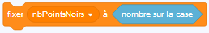
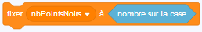
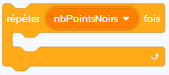
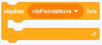
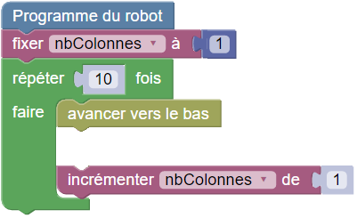
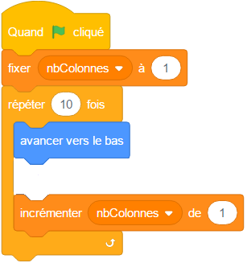

Peindre le motif 6


Programmez le robot pour qu'il peigne toute les cases marquées avec un point noir.
Le nombre devant le robot indique combien de cases sont marquées, un peu plus loin. Il doit donc lire ce nombre, le stocker dans sa mémoire grâce à une variable, puis utiliser le contenu de cette variable dans le programme.
Pour lire le nombre et stocker sa valeur dans la variable nbPointsNoirs, avancez sur sa case, puis exécutez l'instruction suivante :
 

nbPointsNoirs = nombreSurCase()
Vous pouvez ensuite utiliser cette variable là où vous avez besoin de sa valeur, par exemple :
 

for loop in range(nbPointsNoirs): [instructions de la boucle]
Devant le robot se trouvent deux nombres : le nombre de lignes et le nombre de colonnes du rectangle de cases marquées.
Pour résoudre cet exercice, vous devrez créer deux variables, pour stocker ces deux nombres. Appelez-les par exemple nbLignes et nbColonnes.
Dans cette version, les blocs sont regroupés par catégorie dans des menus. Cliquez sur un menu pour accéder aux blocs de la catégorie correspondante.
Dans cette version, les blocs sont regroupés par catégorie dans des menus. Cliquez sur un menu en haut pour accéder aux blocs de la catégorie correspondante.
Devant le robot se trouve un nombre : le nombre de lignes et de colonnes occupées par le triangle de cases marquées.
Pour peindre le bon nombre de cases sur chaque ligne, vous allez devoir créer une variable qui pour chaque ligne, devra contenir le nombre de colonnes à marquer. Après avoir dessiné chaque ligne, le contenu de cette variable devra être augmenté de 1. Cela ressemblera un peu à ceci :
 Notez que cet exercice contient deux tests. Le programme du robot doit fonctionner sur chacun des deux tests.